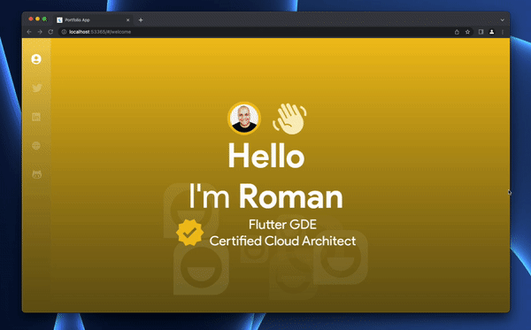
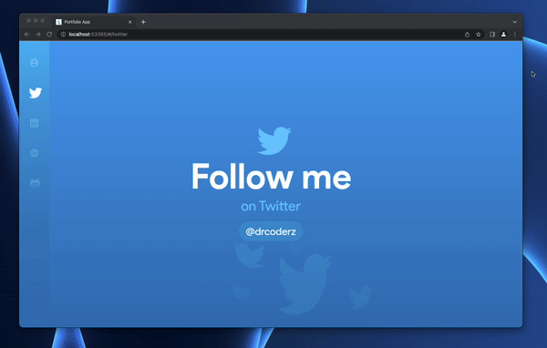
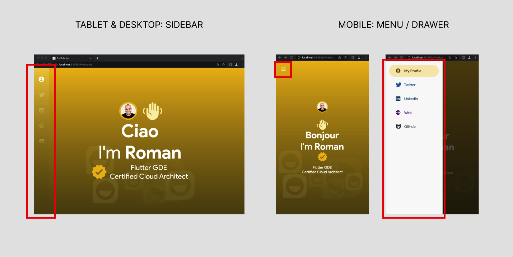
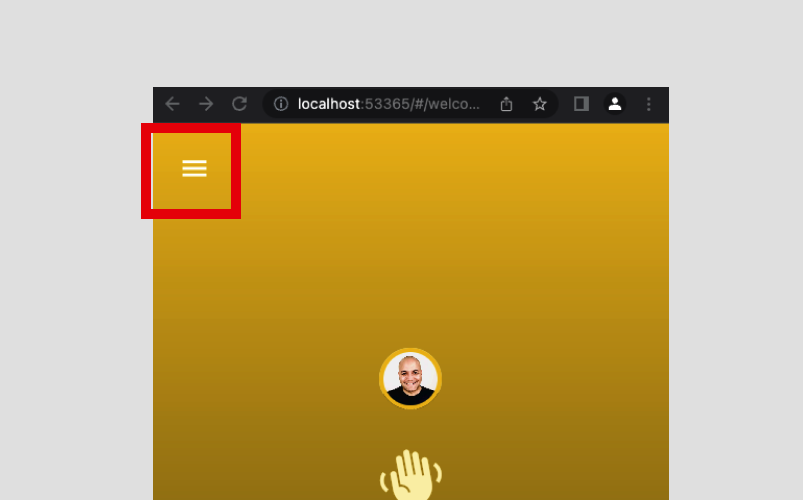
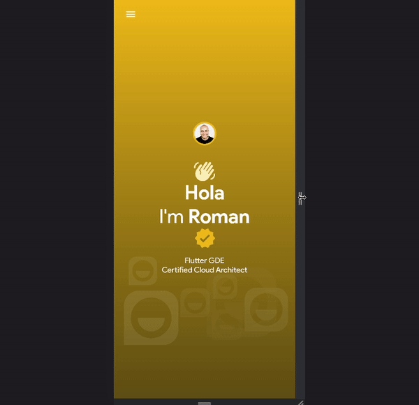
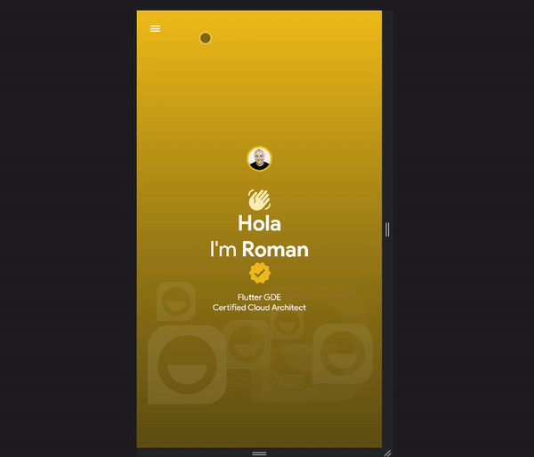

In this codelab, we'll focus on the following:
When a Flutter app is responsive, the widgets adjust based on the size of the screen they are presented on, and programmatically change based on a set of rules given to the rendering platform.
Flutter provides a set of widgets and constructs to achieve responsiveness in your apps out of the box, starting from the MediaQuery widget, which we'll make use of to achieve the responsiveness shown below.
Notice how when we shrink the browser window, things change orientation (picture and hand icon change from horizontal to vertical at certain window sizes, or "breakpoints", the left navigation disappears and switches to a hamburger menu instead, which you can expand and collapse by tapping on the menu icon, etc.). This is the premise of responsive design.
Responsive Design is the approach that suggests that the user interface should "respond" to the user's screen size, device orientation, in the hopes of achieving a fluid user interface that satisfies the needs of users and delivers a seamless experience.
Not to be confused with Adaptive Design as this deals with the different device types or the capabilities of the underlying platform in which the app is being run on, such as mobile and desktop, since for example, it requires dealing with mouse and keyboard input, as well as touch input, or sensors, etc.
Adaptive and responsive can be viewed as separate dimensions of an app: you can have an adaptive app that is not responsive, or vice versa. And, of course, an app can be both, or neither.
For more info on creating responsive and adaptive apps, follow this link.
And if you want a deeper dive into responsive Flutter web apps, you can check out this codelab where I dive into other available widgets that facilitate responsiveness with more fine-grained control.
Let's proceed!
First of all, the upcoming set of steps are needed if you want to roll out your own implementation of a responsive UI strategy, which is pretty straightforward - but you could also use third-party packages that go a bit beyond this but implement similar approaches. I recommend using responsive_builder package should you decide not to roll your own.
But since I like to limit the amount of packages I bring into my app to make it leaner and the required plumbing to achieve responsiveness is not that huge, I'd rather do it myself. Proceed with this notion.
In the lib/helpers/enums.dart file, add the following enumeration:
//... rest of the code omitted
enum DeviceType {
mobile,
tablet,
desktop
}
The DeviceType enum denotes the three major screen sizes we'll be supporting on our Flutter web app.
Also in the lib/helpers folder, create a new file called responsive_ui_helper.dart and add the following class (with the corresponding imports):
class ResponsiveUIHelper {
// our supported max window width sizes
static const int mobileMaxWidth = 375;
static const int tabletMaxWidth = 768;
static const int desktopMaxWidth = 1024;
static DeviceType getDeviceType(BuildContext context) {
final deviceSize = MediaQuery.of(context).size;
final deviceWidth = deviceSize.width;
if (deviceWidth > ResponsiveUIHelper.desktopMaxWidth) {
return DeviceType.desktop;
}
if (deviceWidth > ResponsiveUIHelper.tabletMaxWidth) {
return DeviceType.tablet;
}
return DeviceType.mobile;
}
}
The ResponsiveUIHelper takes in a BuildContext since we need to query the MediaQuery.of with it in order to extract the size of the current media (i.e. the window containing our web app). Querying the current media using MediaQuery.of will cause your widget to rebuild automatically whenever the MediaQueryData changes (e.g., if the user rotates their device).
We check the size.width to determine whether the current width falls within our three supported window widths (desktopMaxWidth, tabletMaxWidth or mobileMaxWidth) and return the corresponding enum.
I'll show you how to use it in a bit.
Let's also add another file that we'll use throughout your app to hold styling information (for now, I want to hold gap sizes for spacing purposes) to use in different screen sizes.
In the lib folder, create a sub-folder called styles, and a file called styles.dart. Add the following class:
import 'package:flutter/material.dart';
class PersonalPortfolioStyles {
static const SizedBox smallVGap = SizedBox(height: 20);
static const SizedBox mediumVGap = SizedBox(height: 40);
static const SizedBox largeVGap = SizedBox(height: 60);
static const SizedBox smallHGap = SizedBox(width: 20);
static const SizedBox mediumHGap = SizedBox(width: 40);
static const SizedBox largeHGap = SizedBox(width: 60);
}
I'm just defining some baseline properties of type SizedBox so I can use them as either vertical or horizontal gaps in different denominations (small to large). Later I can expand on this and build my own design system.
The suggested way to handle responsiveness is as follows:
These values dictate how your UI best arranges itself under these conditions (i.e. for mobile something could be laid out vertically while on desktop is horizontal; for mobile a font can be 40px, while for tablet it can be 60px and for desktop 100px, etc.).
Let's start with the welcome page and let's make it responsive.
Go to the lib/features/welcome/presentation folder, create a subfolder called responsiveness and add a file called welcome_page_responsive.config.dart. Add the following class (add the required imports):
class WelcomePageResponsiveConfig {
final double titleSize;
final double subTitleSize;
final double badgeSize;
final double handSize;
final double imageSize;
final double imageBorderSize;
final Axis headerAxis;
final Axis subtitleAxis;
final SizedBox headerGap;
final SizedBox subtitleGap;
WelcomePageResponsiveConfig({
required this.headerAxis,
required this.titleSize,
required this.subTitleSize,
required this.badgeSize,
required this.handSize,
required this.imageSize,
required this.imageBorderSize,
required this.subtitleAxis,
required this.headerGap,
required this.subtitleGap
});
}
Notice how this class contains all the properties we deem appropriate to manipulate and the things we want to change according to the supported screen sizes and breakpoints.
Inside this same class, you will create a Map, type <DeviceType, WelcomePageResponsiveConfig> called responsiveUI; this will return the corresponding instance of the WelcomePageResponsiveConfig based on the corresponding DeviceType.
Add the map as follows:
//... inside the WelcomePageResponsiveConfig class...
static Map<DeviceType, WelcomePageResponsiveConfig> responseUI = {
DeviceType.mobile: WelcomePageResponsiveConfig(
titleSize: 50,
subTitleSize: 20,
badgeSize: 50,
handSize: 50,
imageSize: 60,
imageBorderSize: 4,
headerAxis: Axis.vertical,
subtitleAxis: Axis.vertical,
headerGap: PersonalPortfolioStyles.mediumVGap,
subtitleGap: PersonalPortfolioStyles.smallVGap
),
DeviceType.tablet: WelcomePageResponsiveConfig(
titleSize: 80,
subTitleSize: 30,
badgeSize: 60,
handSize: 60,
imageSize: 80,
imageBorderSize: 6,
headerAxis: Axis.horizontal,
subtitleAxis: Axis.horizontal,
headerGap: PersonalPortfolioStyles.mediumHGap,
subtitleGap: PersonalPortfolioStyles.smallHGap
),
DeviceType.desktop: WelcomePageResponsiveConfig(
titleSize: 100,
subTitleSize: 40,
badgeSize: 80,
handSize: 90,
imageSize: 100,
imageBorderSize: 8,
headerAxis: Axis.horizontal,
subtitleAxis: Axis.horizontal,
headerGap: PersonalPortfolioStyles.mediumHGap,
subtitleGap: PersonalPortfolioStyles.smallHGap
),
};
Those are the values we consider appropriate and that will make our app look great under each corresponding DeviceType option.
Now that we set everything up, let's consume it inside our widget and replace the corresponding values.
Go to the features/welcome/presentation/pages/welcome.page.dart, and as the first line inside its build method, do the following:
//... inside the build method, as the first line:
var uiConfig = WelcomePageResponsiveConfig.responsiveUI[ResponsiveUIHelper.getDeviceType(context)]!;
We first call the ResponsiveUIHelper's getDeviceType() method, passing the current context, out of which we get the DeviceType enum value that falls under our current window size. Then, in turn, we pass that value to our WelcomePageResponsiveConfig.responsiveUI static Map, which brings us our WelcomePageResponsiveConfig which we hold locally in a variable called uiConfig.
Now you can use the uiConfig instance of WelcomePageResponsiveConfig and populate the hard-coded values for reach of the corresponding variables in question.
Copy the code below as the new content of the body of our welcome.page.dart file (and add missing imports):
//... inside the body - replace it with this code:
final uiConfig = WelcomePageResponsiveConfig.
responsiveUI[ResponsiveUIHelper.getDeviceType(context)]!;
final welcomeDataAsync = ref.watch(welcomeProvider);
return welcomeDataAsync.when(
loading: () => const Center(child: CircularProgressIndicator(
valueColor: AlwaysStoppedAnimation(Colors.white),
)),
error:(error, stackTrace) => ErrorNotification(message: error.toString()),
data: (welcomeData) {
return Center(
child: Column(
crossAxisAlignment: CrossAxisAlignment.center,
mainAxisAlignment: MainAxisAlignment.center,
children: [
Flex( // <-- replaced Column by Flex
mainAxisAlignment: MainAxisAlignment.center,
crossAxisAlignment: CrossAxisAlignment.center,
direction: uiConfig.headerAxis, // <-- direction
children: [
Container(
width: uiConfig.imageSize, // <-- image size
height: uiConfig.imageSize, // <-- image size
decoration: BoxDecoration(
border: Border.all(
color: PersonalPortfolioColors.welcomePrimary,
width: uiConfig.imageBorderSize // <-- border size
),
shape: BoxShape.circle,
image: DecorationImage(
image: NetworkImage(welcomeData.imgPath),
fit: BoxFit.cover
)
)
),
uiConfig.headerGap, // <-- added corresponding gaps
Icon(PersonalPortfolioIcons.wave,
size: uiConfig.handSize, // <-- hand icon size
color: PersonalPortfolioColors.welcomeIcon
).animate(
onPlay:(controller) {
controller.repeat(reverse: true);
},
).rotate(
begin: -0.25,
end: 0,
duration: 0.5.seconds,
curve: Curves.easeInOut
)
]
),
const GreetingsLabel(),
Text.rich(
TextSpan(
style: TextStyle(
fontSize: uiConfig.titleSize, // <-- title size
color: Colors.white
),
children: [
const TextSpan(text: "I'm "),
TextSpan(
text: welcomeData.name,
style: TextStyle(
fontWeight: FontWeight.bold
)
),
]
),
textAlign: TextAlign.center,
),
Flex( // <-- replaced Row by Flex
direction: uiConfig.headerAxis, // <-- direction
mainAxisAlignment: MainAxisAlignment.center,
crossAxisAlignment: CrossAxisAlignment.center,
children: [
Icon(
PersonalPortfolioIcons.badge,
color: PersonalPortfolioColors.welcomePrimary,
size: uiConfig.badgeSize
),
uiConfig.subtitleGap, // <-- added corresponding gaps
Column(
mainAxisSize: MainAxisSize.min,
crossAxisAlignment: CrossAxisAlignment.center,
mainAxisAlignment: MainAxisAlignment.center,
children: [
Text(welcomeData.title, textAlign: TextAlign.center, style: TextStyle(fontSize: uiConfig.subTitleSize, color: Colors.white)),
Text(welcomeData.subTitle, textAlign: TextAlign.center, style: TextStyle(fontSize: uiConfig.subTitleSize, color: Colors.white)),
],
)
]
)
].animate(
interval: 100.ms
)
.slideY(
begin: 1, end: 0,
duration: 0.5.seconds,
curve: Curves.easeInOut
).fadeIn()
)
);
}
);
Notice all the spots where I replaced the hard-coded values that existed by uiConfig and the corresponding properties.
Also notice something different: I've changed the instance of Row and Column widgets where applied and I replaced them by Flex widgets, as some of the values in the uiConfig object were of type Axis. Since Row and Column inherit from Flex (Row is nothing more than a Flex with a direction of Axis.horizontal, Column is a Flex with its direction set to Axis.vertical), so what I decided to do was use the direction property from the uiConfig object, and set the direction of these Flex widgets according to the orientation I deemed appropriate based on the corresponding breakpoint. For mobile, some of these are Axis.vertical while for tablet and desktop the values are Axis.horizontal as there's more real estate width-wise to render their children. This way, as the window width changes and the widget goes through the motion of changing configuration, the Flex children would show either vertical or horizontal accordingly.
Also notice the use of the gap widget properties created in the styles.dart and assigned to properties in the uiConfig object according to the window size (headerGap, subtitleGap); gaps change from small, medium and large depending on how much space I want to devote to the app under each breakpoint accordingly, as well as either being horizontal or vertical gaps, as we see fit.
If you run it, you notice that the welcome page changes nicely, while the greeting labels don't change. Why? well, because recall that the greeting labels is a separate widget. We must consume this uiConfig there as well. Instead of passing it into the constructor, let's still consider a separate, pluggable, encapsulated widget and pull it from inside its build method as well.
Go to the welcome/presentation/widgets/greetings_label.dart and in its build method, replace the existing code with the bottom code snippet:
//... replace the whole body with this:
var uiConfig = WelcomePageResponsiveConfig.
responsiveUI[ResponsiveUIHelper.getDeviceType(context)]!;
var greeting = ref.watch(greetingsViewModelProvider);
return Text(greeting, style:
TextStyle(
fontSize: uiConfig.titleSize,
fontWeight: FontWeight.bold,
color: Colors.white
)
);
Notice how in the same way we are consuming the WelcomePageResponsiveConfig config class instance, we are using it here. If you wanted, you could've created a whole separate config class for this little widget here - I decided to leverage the existing one; either approach would've been good.
Let's take it for a spin and see how the responsiveness of this page is looking.

Let's do another one since we are on a roll - the responsive config class for the Twitter page.
Same as before, go to the features/twitter/presentation folder, create a sub-folder called responsiveness - add a file called twitter_page_responsive.config.dart and add the following content (add missing imports):
class TwitterPageResponsiveConfig {
final double iconSize;
final double titleSize;
final double subtitleSize;
final double buttonLabelSize;
final EdgeInsets buttonPadding;
final EdgeInsets buttonMargin;
TwitterPageResponsiveConfig({
required this.iconSize,
required this.titleSize,
required this.subtitleSize,
required this.buttonLabelSize,
required this.buttonMargin,
required this.buttonPadding
});
static Map<DeviceType, TwitterPageResponsiveConfig> responsiveUI = {
DeviceType.mobile: TwitterPageResponsiveConfig(
iconSize: 40,
titleSize: 60,
subtitleSize: 20,
buttonLabelSize: 20,
buttonMargin: const EdgeInsets.only(top: 20),
buttonPadding: const EdgeInsets.symmetric(horizontal: 20, vertical: 10),
),
DeviceType.tablet: TwitterPageResponsiveConfig(
iconSize: 60,
titleSize: 80,
subtitleSize: 30,
buttonLabelSize: 20,
buttonMargin: const EdgeInsets.only(top: 20),
buttonPadding: const EdgeInsets.symmetric(horizontal: 20, vertical: 10),
),
DeviceType.desktop: TwitterPageResponsiveConfig(
iconSize: 80,
titleSize: 100,
subtitleSize: 40,
buttonLabelSize: 30,
buttonMargin: const EdgeInsets.only(top: 20),
buttonPadding: const EdgeInsets.symmetric(horizontal: 20, vertical: 10),
),
};
}
No different than before; we are capturing the values that render appropriately under the designated supported screen sizes / breakpoints in order to ensure a seamless and fluid user experience as the user resizes the screen or consumes this web app on any given device.
Let's now go to the features/twitter/presentation/pages/twitter.page.dart and replace the whole body of the build method with the following code (and adding the required imports):
final uiConfig = TwitterPageResponsiveConfig.
responsiveUI[ResponsiveUIHelper.getDeviceType(context)]!;
final twitterPageData = ref.watch(twitterProvider);
return twitterPageData.when(
loading: () => const Center(child: CircularProgressIndicator(
valueColor: AlwaysStoppedAnimation(Colors.white),
)),
error:(error, stackTrace) => ErrorNotification(message: error.toString()),
data: (data) {
return Center(
child: Column(
mainAxisAlignment: MainAxisAlignment.center,
crossAxisAlignment: CrossAxisAlignment.center,
mainAxisSize: MainAxisSize.min,
children: [
Icon(data.icon, size: uiConfig.iconSize,
color: PersonalPortfolioColors.twitterIcon
).animate(
onPlay:(controller) {
controller.repeat(reverse: true);
},
).scaleXY(
begin: 0.8, end: 1,
duration: 1.seconds,
curve: Curves.easeInOut
),
Text(data.title,
textAlign: TextAlign.center,
style: TextStyle(
fontSize: uiConfig.titleSize,
fontWeight: FontWeight.bold,
color: Colors.white
)
),
Text(data.subTitle, style:
TextStyle(
fontSize: uiConfig.subtitleSize,
color: PersonalPortfolioColors.twitterIcon
)
),
MouseRegion(
cursor: SystemMouseCursors.click,
child: GestureDetector(
onTap: () {
Utils.launchUrlLink(data.url);
},
child: Container(
margin: uiConfig.buttonMargin,
padding: uiConfig.buttonPadding,
decoration: BoxDecoration(
color: Colors.white.withOpacity(0.1),
borderRadius: BorderRadius.circular(40)
),
child: Text(data.handle, style:
TextStyle(
fontSize: uiConfig.buttonLabelSize,
color: Colors.white
)
),
),
),
)
].animate(
interval: 100.ms
)
.slideY(
begin: 1, end: 0,
duration: 0.5.seconds,
curve: Curves.easeInOut
).fadeIn(),
)
);
}
);
Same as before, we read the DeviceType from the ResponsiveUIHelper.getDeviceType, pass it to the map from the TwitterPageResponsiveConfig and out comes our corresonding uiConfig.
Then just go down the line replacing those values you are interested in - the ones captured in the TwitterPageResponsiveConfig class, and you should be good to go.
Run the app with these changes, and you should get the following result:

Looking good so far! Let's now take care of the navigation, shall we?
This is what we'll be achieving in this codelab step:

We want to tailor the navigation experience as we consider most appropriate for the screen size in which this web app will be rendered; we think a navigation rail on the left hand side allows to take advantage of the available real estate on desktop and tablet, while hiding it under a hamburger menu provides more room in a limited real estate scenario like in a mobile screen, while still following a common pattern such as using a hamburger menu and sliding the options under a drawer widget.
Let's proceed!

Let's create the hamburger menu widget as an independent widget with its own encapsulated behavior. Go to the features/navigation/presentation/widgets folder, and create a new file called hamburger_menu.dart (all this hamburger talk is making me hungry! ;P) - and add the following widget class (add missing imports):
class HamburgerMenu extends StatelessWidget {
const HamburgerMenu({super.key});
@override
Widget build(BuildContext context) {
return Align(
alignment: Alignment.topLeft,
child: MouseRegion(
cursor: SystemMouseCursors.click,
child: Padding(
padding: const EdgeInsets.all(20),
child: IconButton(
onPressed: () {
Utils.mainScaffold.currentState!.openDrawer();
},
icon: const Icon(
Icons.menu,
color: Colors.white,
size: 30
)
),
).animate()
.scaleXY(
begin: 0, end: 1,
duration: 0.5.seconds,
curve: Curves.easeInOut,
alignment: Alignment.center,
).fadeIn(
duration: 0.5.seconds,
curve: Curves.easeInOut,
),
)
);
}
}
This is a simple widget, which aligns itself to the top left of the screen (this will be added inside the shell's Stack), adds an IconButton wrapped inside some Padding with a MouseRegion so we can see the cursor on the web; the icon button triggers the navigation drawer using the reference to the main scaffold widget in the shell page by calling the Utils.mainScaffold.currentState!.openDrawer() method.
I just added a bit of flare by adding a scale animation paired with a fade in animation using the animate() method and chaining a scaleXY() followed by a fadeIn() with the appropriate parameters. Pretty cool!
We'll refer to this widget later as we do the replacement between the navigation rail and this widget.
Just as before with the Twitter and Welcome pages, we'll encapsulate the configuration values that will toggle between the navigation rail and the hamburger menu. For now we'll just keep track of a single flag - a boolean to show whether to display the side bar or not.
In the features/navigation/presentation folder, create a sub-folder called responsiveness, add a new file called navigation_responsive.config.dart and add the following code (add the missing imports as usual):
class NavigationResponsiveConfig {
final bool showSideBar;
NavigationResponsiveConfig({
required this.showSideBar
});
static Map<DeviceType, NavigationResponsiveConfig> responsiveUI = {
DeviceType.mobile: NavigationResponsiveConfig(
showSideBar: false
),
DeviceType.tablet: NavigationResponsiveConfig(
showSideBar: true
),
DeviceType.desktop: NavigationResponsiveConfig(
showSideBar: true
),
};
}
In this config class called NavigationResponsiveConfig, we are keeping track of a boolean flag called showSideBar; notice how in the mobile configuration we hide it, while we show it for the rest.
Let's make use of it now.
Let's now to go the features/navigation/presentation/widgets/left_navigation.dart.
Aside from pulling the responsiveUI map and consuming within this widget, we'll wrap the main Container widget inside a Visibility widget, as follows (replace the whole content of the build method with the code below + missing imports):
//... replace the inside of the body in the left_navigation.dart
var uiConfig = NavigationResponsiveConfig.responsiveUI[ResponsiveUIHelper.getDeviceType(context)]!;
var navItems = ref.watch(navigationItemsViewModelProvider);
return Visibility(
visible: uiConfig.showSideBar,
replacement: const HamburgerMenu(),
child: Container(
decoration: BoxDecoration(
gradient: LinearGradient(
colors: [
Colors.white.withOpacity(0.25),
Colors.transparent,
],
begin: Alignment.topCenter,
end: Alignment.bottomCenter
)
),
padding: const EdgeInsets.all(20),
child: Column(
children: List.generate(navItems.length, (index) {
return LeftNavigationItemTile(
item: navItems[index]
);
}
).animate(
interval: 100.ms
).slideY(
begin: 1, end: 0,
duration: 0.5.seconds,
curve: Curves.easeInOut,
).fadeIn(
duration: 0.5.seconds,
curve: Curves.easeInOut
),
)
),
);
Notice the first line, which is pulling the NavigationResponsiveConfig instance and hold it in the uiConfig property.
Now, notice how we wrap the Container inside a Visibility widget, and feed its visible property with the uiConfig.showSidebar, which either renders what's in its child property, otherwise it shows what's fed into its replacement property - the HamburgerMenu widget. Pretty convenient - we show the navigation or the hamburger menu accordingly.
Run the app and resize it between an approximate tablet width and mobile to see the switching:


This is a simple one, so I'll just fly through it.
I'll create first what each of the items in the drawer menu looks like. I'll call it SideNavigationDrawerRow.
In the features/navigation/presentation/widgets folder, add a new file called side_navigation_drawer_row.dart, and add the following code (plus required imports):
class SideNavigationDrawerRow extends ConsumerWidget {
final LeftNavigationItem item;
const SideNavigationDrawerRow({
super.key,
required this.item
});
@override
Widget build(BuildContext context, WidgetRef ref) {
var labelIconColor = PersonalPortfolioColors.pageColor[item.route]!.colors[1];
var btnColor = PersonalPortfolioColors.pageColor[item.route]!.colors[0].withOpacity(0.25);
return Container(
margin: const EdgeInsets.only(bottom: 10),
child: ElevatedButton(
onPressed: () {
ref.read(navigationItemsViewModelProvider.notifier).selectNavItem(item);
Utils.mainScaffold.currentState!.closeDrawer();
},
style: ElevatedButton.styleFrom(
foregroundColor: btnColor,
shadowColor: Colors.transparent,
backgroundColor: item.isSelected ? btnColor : Colors.transparent,
shape: const StadiumBorder(),
elevation: 0
),
child: Padding(
padding: const EdgeInsets.all(20),
child: Row(
children: [
Icon(item.icon, color: labelIconColor),
PersonalPortfolioStyles.smallHGap,
Text(item.label,
style: TextStyle(
fontWeight: item.isSelected ? FontWeight.bold : FontWeight.normal,
color: labelIconColor,
fontSize: 20
)
)
],
),
),
),
);
}
}
In the newly created SideNavigationDrawerRow class, we create an ElevatedButton widget with the relevant styles to match our desired look. This widget takes via its constructor an instance of LeftNavigationItem, from which we read the isSelected property to drive the selected look.
We made this into a ConsumerWidget so we can read the navigation provider and perform this call inside the button's onPressed() event (do not copy - just for reference):
ref.read(navigationItemsViewModelProvider.notifier).selectNavItem(item);
Utils.mainScaffold.currentState!.closeDrawer();
We read the navigationItemsViewModelProvider to execute its selectNavItem, passing the injected navigation item, followed by a call to Utils.mainScaffold.currentState!.closeDrawer() to close the drawer.
Proceed to create the Drawer widget, which we'll call SideNavigationDrawer. In the navigation/presentation/widgets folder, add a new file called side_navigation_drawer.dart, and add the following code + required imports, as such:
class SideNavigationDrawer extends ConsumerWidget {
const SideNavigationDrawer({super.key});
@override
Widget build(BuildContext context, WidgetRef ref) {
var navItems = ref.watch(navigationItemsViewModelProvider);
return Drawer(
child: Padding(
padding: const EdgeInsets.all(20),
child: Column(
children: List.generate(navItems.length, (index) {
return SideNavigationDrawerRow(
item: navItems[index]
);
}
).animate(
interval: 100.ms
).slideX(
begin: -0.5, end: 0,
duration: 0.5.seconds,
curve: Curves.easeInOut,
).fadeIn(
duration: 0.5.seconds,
curve: Curves.easeInOut
),
),
),
);
}
}
This widget returns a Drawer as the main widget, which wraps a Column with some padding, with SideNavigationDrawerRow child widgets as expected, pulled out of the navigationItemsViewModelProvider after reading from that provider.
Now let's place the drawer where it goes - in the shell page.
Go to the features/shell/presentation/pages/portfoliomain.page.dart file; proceed to replace the contents of the build method of the PortfolioMainPage widget by the following code (add missing imports):
//... inside the build method of the portfoliomain.page.dart:
return Scaffold(
key: Utils.mainScaffold,
drawer: const SideNavigationDrawer(),
backgroundColor: PersonalPortfolioColors.mainBlue,
body: Builder(
builder: (context) {
var navUIConfig = NavigationResponsiveConfig.responsiveUI[ResponsiveUIHelper.getDeviceType(context)]!;
if (!navUIConfig.showSideBar &&
Utils.mainScaffold.currentState!.isDrawerOpen) {
Utils.mainScaffold.currentState!.closeDrawer();
}
return Stack(
children: [
const PageColor(),
const BgAnimation(),
Center(
child: child
),
const Align(
alignment: Alignment.centerLeft,
child: LeftNavigation(),
),
],
);
}
)
);
Let's inspect this code.
Notice the Scaffold's key set to Utils.mainScaffold - this is what's facilitating our ability to trigger the Drawer's opening and closing capabilities programmatically from other widgets.
We add our newly created Drawer - the SideNavigationDrawer widget as the drawer of this scaffold.
Now, we wrap the whole body of the Scaffold inside a Builder - that's because we cannot access the Scaffold instance and its provided capabilities (drawer, snackbar, bottom sheet, etc.) inside the same build context in which it is defined - that's why we introduce a new context by wrapping the Scaffold's body inside a Builder widget, from which we can access the Scaffold above efficiently.
Inside the Builder's builder callback, we fetch a NavigationResponsiveConfig instance so we can query whether the side bar is shown and if it is, check whether it is open or not, that way we can close it, thanks to the following logic (do not copy - just for reference):
//... rest of the code omitted for brevity
var navUIConfig = NavigationResponsiveConfig.responsiveUI[ResponsiveUIHelper.getDeviceType(context)]!;
if (!navUIConfig.showSideBar
&& Utils.mainScaffold.currentState!.isDrawerOpen) {
Utils.mainScaffold.currentState!.closeDrawer();
}
And that's it, folks! We were able to implement a key strategy that will make or break your apps and provide a flawless, fluid experience: responsiveness. We're able now to cater to multiple users and deliver a tailored user experience regardless of the device in which they view it, which is nowadays expected from web apps in today's age.
Your challenge would be to implement responsiveness on the rest of the pages in this web app. We did the welcome and Twitter page; now go ahead and do it for the LinkedIn, Github and Web pages.
You can use the TwitterPageResponsiveConfig class as a reference, but make sure you capture the values you want to have changed upon your UI resizing within the designated breakpoints.
Create then the following:
Follow the TwitterPageResponsiveConfig to create a map that maps the device to the config class with the appropriate values.
Hint: call the corresponding responsive config class; follow this example:
final uiConfig = TwitterPageResponsiveConfig.
responsiveUI[ResponsiveUIHelper.getDeviceType(context)]!;
Then use the uiConfig and read the relevant properties and do the proper replacements in your interface.
This section is optional as our app is working as expected in terms of responsiveness and how it determines which responsive configuration fits best under the supported screen sizes.
This is just an improvement on the way the corresponding configuration gets fetched - some syntactic sugar - around the BuildContext which is required to query the media's dimensions so we can determine which one to pull.
Right now, the way to fetch the corresponding responsive config class is as follows:
final uiConfig = TwitterPageResponsiveConfig.responsiveUI[ResponsiveUIHelper.getDeviceType(context)]!;
Still works, but it may be a bit verbose.
We want it to convert it to this:
final uiConfig = context.uiConfig<WelcomePageResponsiveConfig>();
Let's proceed!
In the lib/shared folder, create a new sub-folder called models - this will serve as the place to put shared common models used throughout, not tied to a given feature. Create a file called iresponsive.config.dart and add the following code:
abstract class IResponsiveConfig {}
At the moment we only want all responsive config classes to implement this contract so we can treat them polymorphycally.
Now go to all the responsive config classes created (i.e. WelcomePageResponsiveConfig) and add the implements followed by this new contract, as such:
//... just add the "implements IResponsiveConfig"
//... leave the rest of the code as-is
class WelcomePageResponsiveConfig implements IResponsiveConfig {
// rest of the code here
}
With this in place, now we'll proceed to add an extension method to the BuildContext. We'll add this in the lib/helpers/responsive_ui_helper.dart file, right above the ResponsiveUIHelper class, as such:
extension GetResponsiveUIConfig on BuildContext {
T uiConfig<T>() {
late IResponsiveConfig configClass;
DeviceType device = ResponsiveUIHelper.getDeviceType(this);
switch(T) {
case WelcomePageResponsiveConfig:
configClass = WelcomePageResponsiveConfig.responsiveUI[device]!;
break;
case TwitterPageResponsiveConfig:
configClass = TwitterPageResponsiveConfig.responsiveUI[device]!;
break;
case NavigationResponsiveConfig:
configClass = NavigationResponsiveConfig.responsiveUI[device]!;
break;
// other configs here
}
return configClass as T;
}
}
Extension methods add capabilities to existing libraries; for that we make use of the extension keyword. In our case, we want to add capabilities to the BuildContext to be able to fetch the corresponding responsive UI config class from the given enum value, and using the current context instance. We pull the corresponding DeviceType through the this keyword (meaning the current BuildContext this is affecting). We also use generics to cast it to the appropriate class.
After this change, now you go to the corresponding classes where we used this approach, and replace the :
final uiConfig = WelcomePageResponsiveConfig.
responsiveUI[ResponsiveUIHelper.getDeviceType(context)]!;
By this:
final uiConfig = context.uiConfig<WelcomePageResponsiveConfig>();
Now it looks more concise and compact, offering you the flexibility to call it from anywhere you have access to the context with less imports, and using the goodies offered by Dart as far as extension methods, generics, etc.
And with that, we're done with this codelab for this workshop, where we accomplished the following:
The complete code is available on Github by following this link.